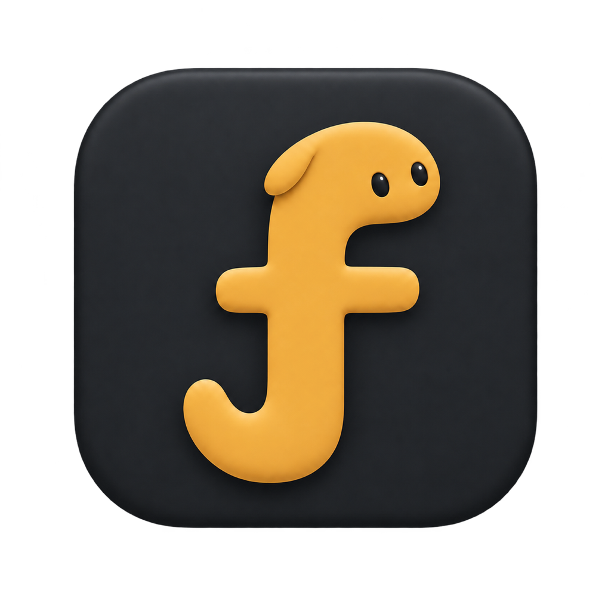
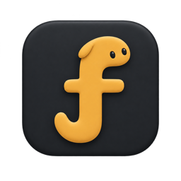
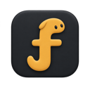
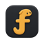

FOLMI / BRAND ASSETS 01
一个有生命感的 f。
D3 · 炭黑＋琥珀。为 Mac 工作台准备的 App 图标，以及可继续长出动作的小精灵。

正式 App 图标
保留已选 D3 的折耳、双眼、横臂与左卷尾。外侧透明，适合放进 Finder、Dock 和应用切换器。
macOS · ICNS16—1024 pxRetina 2x#222429#E9AA47
进入小精灵动作室 →
放进 Dock 的尺寸

128 pt
64 pt
32 pt16 pt
从图标里走出来

可动画角色
眼睛、折耳、卷尾可以分别控制。八个状态已经可以播放；未来由真实终端或 AI 任务驱动。
菜单栏模板
简化为单色轮廓，并放大眼孔，准备 16 / 18 / 20 / 24 pt 及 2x 版本。
模板仅为备用资源，当前 App 的动态 Git 状态图标仍按原有逻辑显示。
动作角色采用可编辑矢量简化重绘，便于分层变形；正式 App 图标保留 D3 的立体质感。角色 PNG 从同一 SVG 渲染。
资源都在项目里
| 资源 | 用途 |
|---|---|
Brand/Folmi.icns | 当前 App 打包使用 |
Brand/AppIcon.iconset/Brand/AppIcon.appiconset/ | 标准多尺寸图标及 Xcode 资源 |
Brand/UI/Brand/MenuBar/ | 透明角色 PNG 和单色模板 |
Brand/Mascot/folmi-mascot.svgBrand/Mascot/motion.json | 动画分层与状态参数 |
scripts/export-brand-assets.swift | 原生导出，保留透明通道，检查 ICNS 尺寸 |